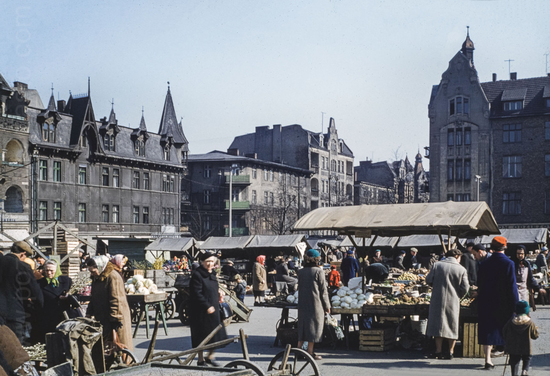

Телеграмма:
ЙЮЗЕФУ КОВАЛИКУ КОСЦЮШКИ 44 КВ 2 ЛЕБА
ДОЕХАЛА ВСЁ ОТЛИЧНО ОСТАНОВИЛАСЬ
У ДЯДИ МАМЕРТА ЕСЛИ БУДЕТ ДЛЯ МЕНЯ
ПОЧТА ВЫШЛИ ЭКСПРЕССОМ НОВОВЕЙСКОГО 2
ЦЕЛУЮ АНИЭЛКА
Прилавки с горками недозрелых яблок, вёдрами полными бархаток и гладиолусов, кучами грязной моркови и банками с хреном. Бочки с квашеной капустой и огурцами. Очереди за картошкой и цветной капустой. Подвижная, ворчащая, плотная и взволнованная толпа. Визжание детей, крики торговцев, рычание грузовиков и плаксивый скрежет заворачивающего трамвая. Облака дыма от лавирующих в толпе автомобилей, облачное небо надо всем этим и солидные, девятнадцатого века, каменные дома рядом. Сильно разнился Познань понедельничный от воскресного.
Отправив телеграмму в Лебу, Аниэла вышла с почты на углу Ежицкого рынка [по названию района - "Ежичи"] и с антипатией смотрела на рыночную толпу. Что до неё, предпочла бы ничего не есть, нежели быть вынужденной давиться в таких унизительных условиях. Что за шум! Что за толкотня!

Было уж почти одиннадцать.
Быть может где-то посреди этих толп кружит и предатель Павелек, покупая цветы для своей путешественницы. Претенциозно нюхает букетик и возвращается быстрым шагом на свою улицу Рузвельта, стараясь не опоздать на назначенное через Аниэлу свидание с Данусей. Хе-хе, дорогуша, ну и глупую будет иметь физиономию - Данка не придёт, ведь она и не в курсе что надо прийти. Любопытно, что будет если он когда-нибудь догадается насчет того телефонного разговора.
Ветерок сквозящий из ворот дома с табличкой "Северин Конопиньский - дантист", заставил Аниэлу сдвинуться с места. Прошла лениво несколько шагов и оказалась пред витриной магазина теле и радиоприёмников. На фоне покрытых пылью проигрывателей для пластинок - устаревших, которые уже никто не купит - и таких же магнитофонов с плёнками для них - отражение Аниэлы засияло полным блеском. Из глубины ей улыбнулся бледный консультант - и Аниэла поняла что, хотя и прыщавый, этот молодой человек выражает ей свою симпатию. Сама себе тоже понравилась - решила что имеет интересное и не банальное лицо, только чересчур скрытое очками. Знала также, что стройна, весьма рассудительна, полна личного обаяния и обладает множеством талантов с актёрским во главе. Мысль что быть может она несколько тщеславна и несколько самоуверена никогда ещё не посещала голову Аниэлы. Фактически имела она несокрушимую убеждённость, подкреплённую всем житейским опытом, накопленным в Лебе и окрестностях этого прекрасного городка, что ни одно человеческое существо не может сопротивляться её чарам.
Тем больнее было вчерашнее разочарование. Живая натура Аниэлы не любила однако длительного уныния, а уж апатия и пассивное ожидание развития событий были ей вовсе чужды.
Всё явственнее переполняла её жажда действий. Однако в равной степени ощущалась и боль в пустом желудке, не наполнявшемся со вчерашнего ужина. Аниэла решила что пора бы проглотить что-нибудь в качестве завтрака.
В тот же самый день Томчо предстояло первое школьное посвящение. Около 10 часов взволнованная Тося (которая специально взяла отгул на работе), и волоча за ручку взволнованную Ромчу, привела Томаша в актовый зал районной школы, вместе с группой из почти ста несчастных, которым завта предстояло начать учёбу в первых классах. Было грустно и шумно. Томчо грыз ногти и от волнения косоглазил как никогда. С минуты на минуту он перестанет быть уникальным интеллигентным и многообещающим сыном своих прекрасных родителей и превратится в одного из множества идентичных на взгляд первоклашек, из которых все были щербаты, одеты в белые рубашки и имели выражение испуга на детских лицах.
Праздник начался с опозданием - и начал его директор школы, попросив дать слово представителю государственной дорожной инспекции, задачей которого было рассказать детям, какие многочисленные виды опасностей поджидают учеников на близлежащих перекрестках улиц. Какая-то девочка громко зарыдала. Вскоре после этого началось распределение, и готовая расплакаться Тося с облегчением убедилась что Томек попал как раз к той учительнице, которую её чуткое материнское око выделило в самом начале праздника. Была то пани средних лет и очаровательного характера, одетая со сдержанной элегантностью, невысокая и полная изящества. "Эта - или никто" - решила Тося, наблюдая выражение достоинства и чувства юмора на лице женщины, которая с этих пор должна была стать для её сына наиважнейшей персоной на свете. "Эта - или никто" - в любом случае Тося имела возможность пойти на попятный, поскольку Томчо, рождённый в 1971 году, не был обязан идти в школу прямо сейчас и мог бы, любимое дитятко, порезвиться ещё год на свободе. Если бы, конечно, он на это согласился, в чем были сомнения. Во-первых его слишком взволновал диагноз от психолога, которая выявила у него умственные способности выше средних и полную готовность к школе; во-вторых альтернативой был детский сад с музыкальным уклоном, где, как заявил Томчо, одни бабы и нужно танцевать в хороводе и петь тонким голоском.
"Как-то оно всё будет?" - думала Тося, стискивая в руке вспотевшую, тёплую лапку Ромчи и глядя на задумчивый профиль своего сына-интеллигента, которого уж в тот момент пытался толкнуть какой-то зловредный крепыш с низким лбом. У неё болело сердце и хотелось плакать. Все жестокости бытия, массовые случаи оскорбительной несправедливости, издевательств сильных над слабыми и вообще всего плохого, что есть в мире, всё это нависло над бедной головой Тосиного сына, который был слабым, маленьким и беззащитным - и таким далёким от жёсткой и жестокой жизни, которая его теперь ожидала.
В тот самый момент, когда она вытирала нос, заметила как Томчо с ангельским спокойствием проводит болевой приём на том самом массивном злодее, а заодно ещё и пинает беднягу под креслом, целясь в лодыжку. Жертва Томаша сначала шипела а потом посмотрела на него с уважением.
"Всё будет хорошо" - промелькнуло в голове Тоси, а её взор с собачьей верностью обратился к лицу учительницы - "Уверена, у неё самой есть дети".
Около одиннадцати школьные впечатления немного отпустили Тосю, тем более что ей остался ещё кусочек свободного околополуденного времени - что было слишком ценным даром судьбы, который грешно было бы потратить как-то иначе, нежели на Большую Стирку. Мамерт конечно с утра застрял в своей клинике на Пшибышевскего, и это было хорошо, поскольку - как твердила тётка Лиля - ничто мужчину так эффективно не раздражает, как Большая Стирка. Тем более если нет автоматической стиралки и ни малейшего шанса её раздобыть.
И вот Тося уж полчаса возилась в мыльной пене своими деликатными руками пианистки - и если Аниэла ожидала, что вернется в чистую кухоньку, где её будут ожидать специально приготовленные лакомства, то ошибалась капитально.
Кухня была полна рассортированного грязного белья, а Тося шумно возилась в санузле, то включая машинку "Франя", то с плеском наливая воду в ванну, то передвигая по полу наполненный таз.
Томчо и Ромча сидели себе спокойно, рассматривая книжечки и притворяясь, что пьют молоко, которое стояло перед ними на столе в нетронутых чашечках и покрывалось всё более толстой пенкой.
– Привет, - сказали без внимания вошедшей Аниэле.
– Привет, - ответила она, осматриваясь вокруг. Небольшая комнатка со скошенным потолком украшена была скромно, но
с изобретательностью. Она была поделена на две части простым чёрным стеллажом, заставленным книжками. Из окошка
заросшего диким виноградом лился приятный холодный свет, под окном стоял белый стол, полный медицинских справочников
и документов. Тут же рядом - старое чёрное пианино. На стене, над кроватью с красным покрывалом, висела большая
чёрно-белая фотография заснеженного горного кряжа с высоты птичьего полёта. То была, очевидно, часть комнаты,
принадлежащая Мамертам. За стеллажом было королевство Мамерчат, две кроватки с сеткой, два красных стульчика и
такой же столик. В наклонный потолок был вбит крюк, с которого свисала на длинном шнуре плетёная корзина полная
игрушек. Ничего больше тут уже бы не поместилось.
– Зачем Земле быть магнитом? - спросила внезапно Ромча, глядя на Аниэлу пристальным взглядом.
Томчо улыбнулся, хитро косясь в сторону шкафа. В нижней челюсти ему тоже не хватало зуба - в промежутке уже виднелся вылезающий новый.
– Пейте-ка лучше молоко! - уклонилась от ответа Аниэла. Мамерчатки переглянулись.
– Ха, опять не знает.
– Старик! - сказала Ромча, - они никогда ничего не знают.
– А выглядят такими умными, - добавил Томчо негромко. Оба засмеялись, довольно мрачно.
– Ужасно премудрые вы детишки. Я проходила это в школе, когда вы ещё по полу ползали, - объяснила Аниэла.
Это их впечатлило. Гости мамы и папы всегда обращались с ними вежливо если не вовсе слащаво. Две пары очей блеснули пытливо при следующем вопросе Ромчи.
– Ты правда знаешь, что если бы не магнит, мы бы все попадали с неё?
– Естественно, - буркнула Аниэла и добавила поощрительным тоном, - пейте, ребята, молоко. В молоке много магния.
Эта информация произвела на Мамерчат эффект грома и молнии. Они прямо замерли на своих креселках.
– По правде?!
– Конечно.
Томчо с ужасом отодвинул свою чашку.
– Опять то же самое, - сказал сестре, - от нас скрывали.
– Магния! - повторила Ромча с суеверным ужасом.
– Может содержит что-то ещё. Я знаю только о кальции.
– Мне плохо, - простонала Ромча.
Оба встали и ухватив с омерзением свои чашки, понесли их на кухню, где тщательно вылили их содержимое в раковину. В этот самый момент вошла Тося.
– Что тут творится, эй?
Ответом ей была гробовая тишина. Голова к голове, плечо к плечу, Мамерчатки стояли твёрдо и ровно, смотря на мать идентичными, искусственно невинными взглядами. Слепой бы догадался что они провинились.
Тося глубоко вздохнула. Ей было жарко. Была к тому же измучена. До глубины души не любила стирки грязного белья и неисчислимых детских носков, которые регулярно пачкаясь и теряясь утратили окончательно все черты парности. Поэтому вид Аниэлы стоявшей прислонясь к холодильнику и непонятно улыбающейся был более чем раздражающим.
– Если сейчас же не выясню, что произошло, - сказала Тося категоричным тоном, - на неделю останетесь без сладостей.
Дети молча переглянулись. Обмен взглядами имел целью сговориться что лучше обойтись неделю без сладкого (угроза, о которой мама всё равно забудет завтра), чем сознаться в выливании молока и понести несоизмеримо более суровую кару.
Аниэла решила бескорыстно избавить Мамерчат от проблемы. В детские годы она сама была неедякой. Нынче же хотя аппетит и служил ей в пределах нормы, не имела благоговейного трепета перед едой. Предполагала, что это последствия "психологической травмы" детства - помнила до сих пор отвратительный вкус холодного помидорного супа с рисом, который заставлял есть отец - и в повторяющихся кошмарах являлось ей остывшее молоко с противной пенкой - его приходилось глотать сквозь сжимающееся от омерзения горло.
– А ничего не случилось, - сообщила с улыбкой Тосе, - дети просто собрались вымыть чашки после молока.
– О? - Тося подняла светлые брови, приятно удивлённая что её детям могла прийти в голову такая идея. - И молоко
выпито полностью?
На несколько мгновений воцарилось молчание.
– Конечно, выпито, - поспешила на помощь Аниэла. Старалась завоевать доверие Мамерчат, но один взгляд на их огорчённые рожицы показал, насколько неправильный путь она выбрала.
В это время Тося смотрела на Аниэлу взглядом теплейшим чем когда-либо.
– Видимо ты имеешь на них благотворное влияние, золотко. Если так пойдёт дальше, они с тобой приучатся пить даже отстоявшееся молоко. Не могу им вбить в голову что отстоявшееся молоко содержит множество питательных...
В этот момент встрял Томчо. Его юная неопытная душа не могла справиться с ужасной тяжестью.
– Мамуся, - рек, показывая как высоко ценит принципы, заложенные родителями, - Мамуся, она Клам.. Кламчуха.
– Хм? - Тося взглянула на сына с удивлением.
– Вылили мы молоко, в раковину. - Тося замерла.
– Зачем? - спросила спустя несколько мгновений.
– Потому что содержало магний. Кламчуха сказала что в молоке содержится магний. Правда, мама, что то неправда?
– Слушай, ты уверен что понимаешь, о чем говоришь?
Томчо выпятил губу.
– Она Кламчуха. Я не хочу чтобы она за меня врала, Кламчухо. [от "klamać" - врать]
Аниэла никогда в жизни не подозревала что какой-то шестилетний сопляк сможет ввергнуть её в смущение. Однако теперь румянец стыда предательски разлился по её щекам, исключая возможность как-нибудь ловко выкрутиться.
– Хотела просто вам помочь, - неуверенно запинаясь пояснила она, - И чтобы ваша мама не огорчалась.
– Папа говорит, - сказал Томчо высокомерно, - что нельзя людей обманывать ради их добра. Потому что всегда,
когда кто обманывает людей для их добра, это для своего добра а не для ихнего.
Тосе захотелось обнять сына. В то же время вид пурпурной от стыда Аниэлы смутил её - она всегда смущалась сама видя чьё-либо смущение. Раздираемая противоречивыми чувствами она стояла без движения посреди кухни. Из неловкой ситуации вырвал её звонкий окрик из холла внизу.
– Тосю! Тосю!!!
– Тётка Лиля, - пояснила Тося Аниэле и крикнула, - Сейчас-сейчас! - и побежала вниз по ступенькам.
Аниэла вышла из кухни на цыпочках, подкралась до перил лестницы и глянула вниз.
Посреди холла, создавая многократное фиолетово-красное отражение в тройном зеркале с резными рамами, стояла стройная пожилая пани, живописно одетая в накидку и халат. Сверху не было видно её лица, только выдающийся острый нос, торчащий из-под намотанного на манер тюрбана шёлкового шарфа.
– Что это, у вас гости? - спросила тётка Лиля сдержанным тоном.
– К нам приехала племянница Мамерта, - объяснила Тося, - Милый ребёнок, она будет учиться в Познане, в лицее.
Тётя, нельзя ли ей тут как-нибудь устроиться? Девочке негде остановиться, интерната ей не предоставили, а она
добиралась аж из Лебы...
– Моя Тосю, знаешь ведь, что всё забито под завязку.
– О, знаю, знаю.
– Сотрудники отдела размещения и так на меня косятся. Если хотите разместить девушку у себя, то сообщите о ней
как можно скорее. Хотя почему бы не поискать ей комнату в городе? Ей же необязательно жить прямо у вас.
– Ну, в общем-то необязательно, - признала Тося по размышлении.
Наверху у Мамертов слышно было каждое слово сказанное в холле. Поэтому когда Тося вернулась на кухню, без удивления увидела Аниэлу сидящую на корточках у стены и плачущую крокодиловыми слезами.
Искусством трогательного рыдания Аниела владела в высокой степени. Достаточно было призвать пред воображение какую-либо очень грустную картину, и вот уж слёзы как горох катились по её щекам. То не был коронный номер Аниэлы - плакать не любила вообще, даже по своим личным переживаниям. Но в этот раз намеревалась взволновать Тосю и подвигнуть её к более активным действиям "на местном уровне". Поэтому вообразила себе какое огромное городское пространство отделяет Лицей Полиграфичный на Розовой от наимилейшей улицы Рузвельта. Другой образ представил Павелка, обнимающего изысканную девицу в белом и нежно шепчущего ей "Дануська".
– Ох, Аниэлко, на милость Божью, не плачь так жалостно, - расстроилась Тося.
Некоторое время она крутилась беспомощно вокруг девушки, пока наконец, меря чувства Аниэлы по своей мерке, решила прежде всего как следует бедняжку накормить.
– Сейчас сотворю тебе завтрак, - сказала, потянувшись за желтым чайником. Мамерчатки стояли спокойно напротив
Аниэлы, разглядывая плачущую с чисто детской объективностью.
– Очки лучше сними, - посоветовал Томчо вдумчиво, - наплакаешь на стёкла, придётся их чистить.
– А яичницу любишь? - спросила Тося на фоне отзвуков шкворчащей на масле луковицы.
– Да, - всхлипнула Аниэла, - только не слишком поджаристую.
Прежде чем яичница была готова, Аниэле уже полегчало. Шмыгая носом и вытирая очки, села за кухонный стол на котором уже стояла плетёнка с булочками и чашка для кофе. Мамерчатки схватили по булке и заявили что пойдут себе побегать. Вскоре послышлся топот четырёх ножек по лестнице и отдаляющееся монотонное пение - собственная композиция Мамерчат на их собственный текст:
– Одна бабка другой бабке наплевала в тапки. Одна кура другой куре повисла на шкуре. Хе-хе. Одна зайка
другой зайке закрутила гайки.
– Ну, ешь, ешь, - подбадривала Тося, выкладывая на тарелку перед Аниэлой дымящуюся яичницу. На дворе под
каштанами Мамречата в унисон продолжали свою песнь, контрапунктируя её восторженными взрывами смеха.
– Одна тёлка другой тёлке поломала ёлку. Одна мышка другой мышке оттоптала кишки.
Тося слушала это с выражением беспокойства на лице.
– Откуда у них берутся эти жуткие мысли, не понимаю. "Оттоптала кишки", раны Божьи!
– Оттуда же, откуда у всех детей, - буркнула Аниэла без заинтересованности. Что до неё, все дети мира казались ей
идентичными и абсолютно несимпатичными. Часто задумывалась, почему люди так восторгаются над этими маленькими
бестолковыми и примитивными существами, которые верещат, шкодят или писаются в неподходящий момент, не могут
толком ни о чем поговорить - и в длительной перспективе чрезвычайно утомительны. Полбеды, если это розовый, пухлый
и весело лепечущий малютка - в таком случае он хотя бы создаёт эстетичное впечатление.
Но такие монстры как Томчо и Ромча? Что-то ужасное. Ячиница была поджарена в самый раз, булочки хоть глинистые на вкус, всё равно были съедобны. Горячий кофе пах по-домашнему уютно. Сохранение понурого выражения на лице теперь давалось Аниэле с большим трудом. Тем более что у неё возникла идея.
– У меня возникла идея, - сказала она Тосе, - пойду сама к тётке Лиле, может удастся её убедить.
– Что ты! Наверняка нет.
– Всё же попробую, - упёрлась Аниэла.
– Ну... какие у тебя могут быть аргументы?
Аниэла не ответила. Честно говоря, верила в основном в своё непреодолимое личное обаяние. Ещё никогда в жизни не случалось, чтобы кто-то отказал ей, как только начинала улыбаться и излучать это самое обаяние.
– Аниэлка, послушай, - продолжала Тося, - ты же понимаешь что ни тётка Лиля, ни кто другой не сдаст тебе
жильё бесплатно... Догадываюсь что у вас финансы не текут рекой, но видишь ли... тётка Лиля пенсионерка.
– Спокойствие, - отмахнулась Аниэла, - у меня всё предусмотрено в бюджете. Наверняка смогу о себе позаботиться, -
добавила, думая в то же время, что если бы не теснота в жилище Коваликов, вовсе не нужно было бы заботиться
и комбинировать. Осталась бы жить у них - вот и всё. Теперь, когда воочию убедилась, что такое решение, однако,
невозможно, Аниэла далека была от осуждения родственников, хотя и чувствовала в глубине души нечто вроде
сердитой претензии.
– Одна панна другой панне варит кашу в ванне... - заголосили под окном Мамерчата, явно на пределе своих
рифмотворческих возможностей.
– Знаешь что, - пришла другая идея Тосе, - Пойдём в твой лицей! Поговорим с директором, расскажем о твоей сложной
ситуации. Уж кому-кому, а тебе интернат положен наверняка!
"Ещё не хватало, - подумала в панике Аниэла, - и что делать?"
– Спасибо большое, - ответила, светясь благодарностью. - Всё же, однако, сперва попробую поговорить с тёткой Лилей.
А уж если не удастся...
– Мамо! Мамо! - завопили дети под окном.
– Что там? - высунулась из окна Тося.
– Можем мы пойти за жевательной резинкой?
– Нет!
– А почему не можем?
– Потому что у вас нет денег, - рыкнула Тося.
– Так дай!
– А фигу.
– Ну, мамо!
– Нет уменя денег. И идите отсюда. Поиграйте с другими детьми. А то скажу отцу.
– Можно бы им сказать, что в жвачке тоже магний, - посоветовала Аниэла.
– Жевательная резинка по пять раз в день, - возмущалась Тося, плотно закрывая окно, чтобы не слышать своих чад. -
и по пять раз в день мороженное из автомата.
– Одна хрюша другой хрюше отгрызает уши. - долетело и через стёкла, - Одна тётка другой тётке надавала щёткой...
– Можно сойти с ума если выполнять все их хотелки! А леденцы? А кока-кола? А то и дело ещё новый блокнот для
рисования? - Тося с беспокойством выглянула в окно, будто опазалась что Мамерчата пойдут побираться на углу
Сталинградской. Ан нет, встали обнявшись у песочницы, глядя на двух толстых девочек копающихся пятками в песке.
– О, раны, моя стирка! - опомнилась вдруг и бросив всё побежала в ванную. ["Раны Божьи" или просто "раны" -
аналог наших "блин", "ёлки" и подобных междометий]
Аниэла посмотрела ей вслед со снисходительным сочувствием. Бедняжка. Стирка, полоскание, детишки, молоко, жвачка и весь этот мелкий балласт. Неужели и вправду есть какой-то смысл, чтобы образованная женщина тратила время на двоих таких неинтересных существ как Томчо и Ромча? Да, Тося хоть и довольно симпатична, однако очень ограничена в своих жизненных стремлениях. Что до Аниэлы, не собиралась выходить замуж. "Ну разве что за Павелка... в будущем..." - зашептал в её подсознании шелковый голосок потаённых желаний.
Размечталась помимо воли, вообразив себе гурьбу красивых златовласых детей, похожих на маленьких Аполлончиков. Все они, одетые в белые свитерки и красные шорты тихо сновали вокруг неё, сидящей у стоп Павелка, и читающей ему сонеты Шекспира.
– Одна цапля другой цапле... - выкрикнул под окном Томчо и внезапно замолк, не в силах подобрать рифмы.
"Ну, хватит, - очнулась Аниэла, - Пора идти к тётке Лиле. Время поджимает. Во, пожалуйста, уж двенадцать, а тут человек ещё без крыши над головой".
Очень симпатичные туфли Тоси стояли на коврике у дверей. Скромыне, изысканные в своей полной простоты форме... бежевые, на аккуратном каблучке. Размер... ну даже почти как у Аниэлы. Когда их примерила, оказалось что лишь чуточку больше. Да и то можно было заметить лишь глядя на ноги Аниэлы сзади. На всякий случай решила держаться всё время лицом к собеседнику. Обязательно нужно было одолжить туфли. Неосмотрительно было бы предстать пред тёткой Лилей в рыбацких сапогах. Способ, который без задоринки сработал у Коваликов, в интерьерах старшей пани мог бы шокировать. Аниэла достала маленькое зеркальце и начала корчить перед ним мины, пытаясь изобразить такой тип личности, который мог бы покорить суровую даму. Скромная, веселая девочка-скаут с глазами, полными живой интеллигентности. Вот так-то!
– Одна жабка другой жабке насморкала в шапку... О, Кламчухо! Куда идёшь в маминых ботах?
Мамерчатки стояли в дверях кухни. Ответ должен быть прямым, понятным и решительным. Никаких разговоров, никаких колебаний.
– Иду к пани Лиле, - объяснила им Аниэла.
– Ага, - согласились дети утрачивая интерес. Двинулись до своей комнаты, откуда после непродолжительного
перешептывания вышли с охапками лопаток, ведёрок, игрушечных грузовиков и совочков для песка. Выбрались на лестницу
не замечая Аниэлы, как не замечают воздуха.
– Что там, детки? - спросила Тося из ванной, перекрикивая стиралку "Франя".
– Идём себе в песочницу, мамуся.
Обеспокоенная столь милым ответом Тося перегнулась над перилами лестницы. Выглядело что всё как будто в порядке. Даже не были особенно грязыми.
– Идите, идите, - согласилась мягко. Она также как Аниэла имела когда-то свои мечты. Теперь временами ощущала приступы раскаяния, что не стала утончённой, деликатной мамочкой, которая разговаривает с детьми голосом, подобным скрипичной музыке и целый день то читает им поэтические сказки, то прогуливается с ними в розовом саду. В кружевной сорочке. Вздохнула и локтем отёрла пот со лба. Выпустила грязную мыльную воду из "Франи" и закрутила кран над умывальником. Набралось уже достаточно тёплой воды и можно было полоскать детское бельё.
Продолжение следует